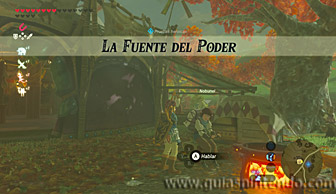
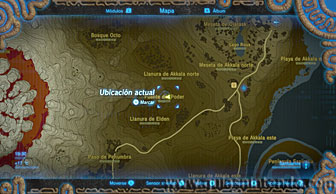
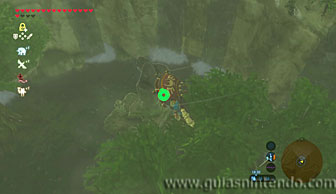
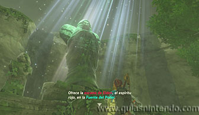
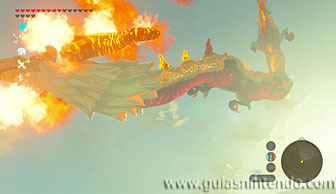
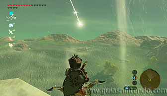
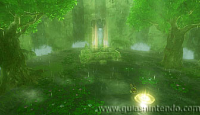
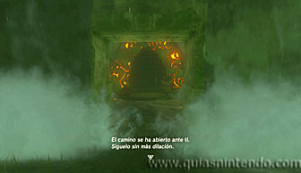
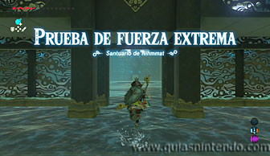
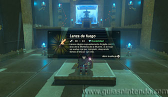

Este santuario está disponible desde que llegas a la región de la torre de Akkala, aunque para desbloquear la entrada necesitas completar la Prueba heroica: La fuente del poder. Habla con la chica que hay junto a la cacerola en la Posta de Akkala este para activar la prueba.

Ve a la Fuente del Poder situada al este de la Montaña de la Muerte y al oeste de la Posta de Akkala este. Desde este último lugar podrás llegar enseguida. Al hacerlo salta y planea al fondo del acantilado donde se encuentra la fuente.

Allí abajo encontrarás una estatua de una diosa. Ponte delante de ella y reza para que te hable de la escama de Eldin, en este momento se activará la Prueba heroica. Ahora necesitarás encontrar ese extraño material y depositarlo en la fuente.

La única manera de conseguirlo es disparar una flecha al cuerpo del gran dragón rojo que sobrevuela por el norte de Hyrule. Para localizarlo lo mejor es que viajes al Pilar del valor (donde se encontraba el Santuario Aguith) y vayas al este para localizar el Gran fósil de Eldin. Desde él podrás ver aparecer justo al amanecer al dragón.

Si te sitúas sobre el gran fósil tendrás un buen punto de vista para dispararle en cuanto se acerque. Si logras darle en el cuerpo caerá algo brillante. Fíjate donde cae y ve a recogerlo. Esa es la escama (siempre que le hayas dado en el cuerpo y no en la cabeza o garras). Si no lo consigues deberás volver otro día, ya que no te dará más objetos aunque le vuelvas a acertar.

Regresa a la fuente y deposita la escama en el agua. Así aparecerá la entrada al santuario.

Una vez dentro tendrás que derrotar a un miniguardián 3.0. Entonces podrás abrir el cofre que contiene una Lanza de fuego. Después dirígete al altar para conseguir el símbolo de valía correspondiente.
